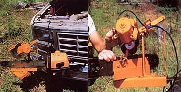
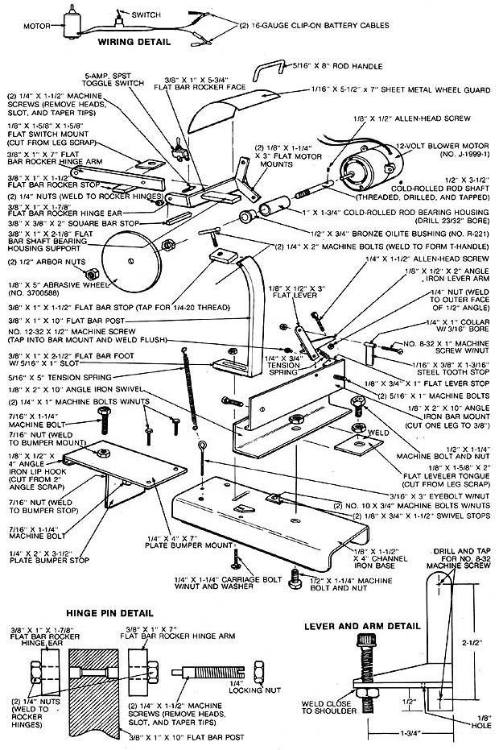

If you're not too keen on manually sharpening your chain saw, build this tool and . . .
While there are people who enjoy hand-filing their chain-saw chains, for most of us, keeping the cutters sharp can be a tedious, time-consuming, and often frustrating chore. And although such regular maintenance is a necessity, there's nothing that says you can't take steps to get it over with as quickly as possible!
Some can wield a mean freehand file, and others rely on jigs to keep the teeth set, but thanks to some workshop wizardry, MOTHER's staffers can now simply clamp the electric sharpener shown here to a truck bumper or a workbench and dress a saw chain clean as a whistle in a matter of minutes . . . and with a little bit of work, you can duplicate this time-saving tool!
It's built from dimensional steel stock and uses a 12-volt blower motor and commercially available abrasive wheels to do the dirty work. But it also has a couple of features that make it downright convenient to use. For one, the DC motor can be run directly off your vehicle's battery, so you can sharpen your saw right in the field. Second, once you've drilled two 5/16" holes in your chain bar, the saw can be clamped and sharpened without disassembly. Likewise, because the mount is designed to pivot, both the rightand left-hand cutters can be dressed without dismounting the tool. Finally, because the grinding wheel is set at a predetermined angle, the cutters are always filed at the correct pitch.
All the parts are dimensioned and described in the accompanying illustration, and they're commonly available as hardware or steel scrap items. The 12-volt motor (Part No. J-19991) was ordered at a cost of $11.50, including shipping, from Jerryco Inc., 601 Linden P1., Evanston, IL 60202, and the 1/8" abrasive wheel (Part No. 3700588) is available from the Foley-Belsaw Co., 6301 Equitable Rd., Kansas City, MO 64120 (other wheels are available to fit larger saws).
We won't walk you through the tool's assembly step-by-step, because the illustrations should provide all the instruction you'll need. But we will offer some suggestions that'll make things easier as you go along. To start, you'll need to cut a 1-5/8" strip of metal from one leg of the angle iron section that'll be used as the bar mount. This piece of scrap can later be employed to make the switch mount and the leveler tongue. Also, rather than welding the swivel stops to the base, simply cut 45° angles into the end of each one and drill slots in their centers; they can then be adjusted to suit the pitch of your chain's teeth and fastened with 3/16" machine bolts.
Another point of concern is the angle of the wheel itself. This is determined by the degree of bend you put into the flat bar post which supports the rocker assembly, and this angle must match the contour made by the top and side plate of each cutter. A 65° angle is adequate, and you can bend the metal easily once it's heated to a dull glow with a torch.
Important, too, is the hinge-pin arrangement of the rocker assembly, which is detailed with the illustration. First, a 1/8" hole should be drilled through the side of the support post, parallel to the upper end. Then two 1 /4" sockets, 1/4" deep, must be bored at the ends of this hole. The pins are 1 /4" machine screws with the heads removed, with 1/8" tapers or needles cut into the shanks, and with slots added at the threaded ends. Nuts welded to the rocker arm and ear hold the pins in place.
Another "custom fit" operation involves mating the 5/16" motor shaft to the arbor shaft and installing that assembly in a bushed housing. The 1/2" X 3-1/2" cold-rolled rod gets a 1/2-13 thread at one end, and a 5/16" X 1-1/2" socket at the other. A 3/32" hole drilled into the socket and tapped for 1/8-32 thread accepts an alien-head set screw. The 1" X 1-3/4" rod should be center-bored to 23/32", and a 1/2" X 3/4" oil-impregnated bushing must be driven into the opening once the housing is installed on its support. The motor must be aligned perfectly with the bearing housing, so don't weld the motor mounts to the rocker face or drill the mounting holes until the housing is installed.
Finally, there's no room for roughshod workmanship in the construction of the tooth stop assembly. The lever and the arm must be perpendicular to each other, and the tooth stop and collar squarely fastened to the lever. The unit pivots on a No. 12-32 machine screw that's threaded and surface-welded into a hole centered 3/8" from the bar mount's upper edge and 3-1/4" from its right end.
To use the sharpener the first time, clamp it to a bench and place your saw's cutting bar alongside the bar mount to determine the best place to drill the 5/16" holes that will hold the saw in place. To play it safe, you might even want to hold off on actually welding the 5/16" bolts until you've established their ideal location with reference to the saw's bar. Once you've bored the two holes through the bar, swing the swivel right and left to assure that the chain doesn't shift when you make the transition. If the 1/2" pivot bolt isn't perfectly plumb with the grinding point of the abrasive wheel when it's in the working position-or if the swivel or bar mount is somehow warped or cocked out of line-the chain will shift and will ultimately be sharpened improperly. Minor irregularities can be alleviated by adjusting the leveler and placing shim washers behind the chain bar as necessary.
The swivel stops should be adjusted to suit your chain's cutter pitch; 30° and 35° angles are common, but you can set them at any angle you wish up to 45°. Likewise, the depth of the grind can be adjusted with the T handle at the top of the rocker post. The tooth stop, of course, assures that the cutters are fixed at the right location as you pull the chain along the bar during the dressing process. Its alien-head screw can be locked so the stop's position doesn't change. (To simplify things, sharpen every other cutter as you go so you won't have to be changing the swivel position more than once.)
With the sharpener properly set up, it'll whip through a ragged chain in a few minutes . . . leaving you with more time to do the things you enjoy this winter.
|
 LEFT: The 12-volt sharpener can take to the field with the rest of your woodcutting tools because it's been designed to clamp to any convenient spot on your vehicle's bumper. The clip-on leads connect directly to each battery post. RIGHT: Once the chain saw bar is bolted to the tool's mount, adjust the swivel stops to match your particular chain's cutter pitch, position the chain by using the lever and arm to set the tooth stop, and gauge the depth of cut with the T-handle. |
 |
|